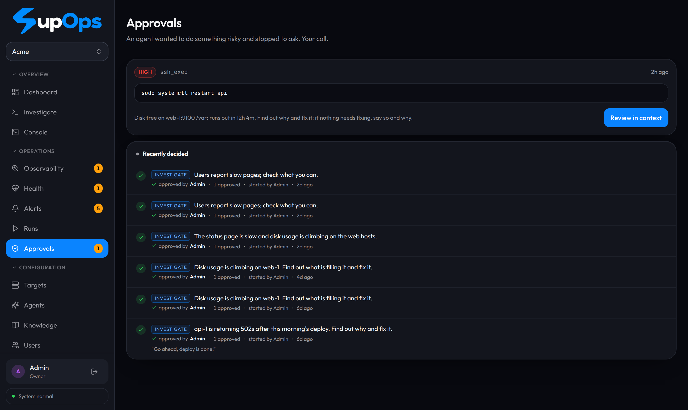
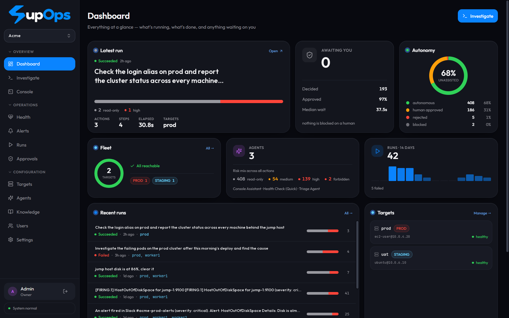
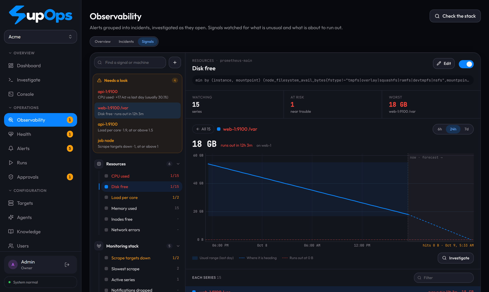
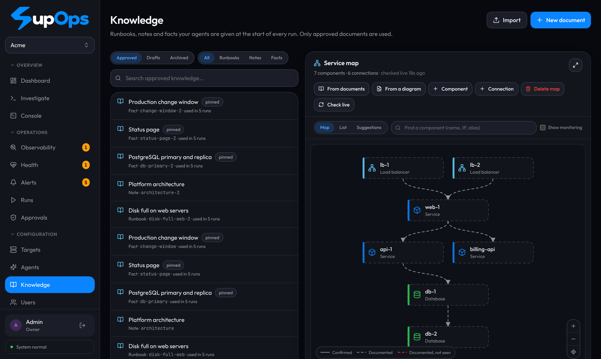

From alert to root cause to fix. You approve every change.
SupOps is open-source AIOps for the stack you already run. It reads your Prometheus, Loki, Kubernetes and Slack, cites its evidence, proposes a fix, and waits for you.

01 The loop
Monitoring tells you something is wrong. SupOps works out why.
Most AI-for-ops tools stop at a paragraph of advice. SupOps runs the read-only checks itself and, where a fix is safe, proposes it. The human is a step in the loop.
- AlertAlertmanager, Prometheus, Grafana, Slack
- EvidenceFixed read-only checks
- Root causeCites the evidence
- Proposed fixExact command and intent
- Your approvalEvery change
- VerifiedOutcome checked and recorded

02 Safety
Every stage can only raise the risk.
Each proposed action passes five stages: baseline, arguments, target, model, override. Any stage may make it riskier. None may make it safer. A log line that says “pre-approved by ops” buys an attacker more prompts, never fewer.
- read_onlylow
- Run automatically:
df,systemctl status,kubectl get pods. - mediumhigh
- Pause and wait, showing the exact command, the stated intent and why it was flagged.
- forbidden
- Never runs, whoever approves. On a production target, an irreversible delete of a database, bucket or cluster is forbidden too.
Parsed, not pattern-matched
rm -rf / has endless spellings. Anything that cannot be read statically (substitution, backticks, a variable that could become a command) fails closed at high.
Survives a restart
A run paused at an approval resumes the same hours or deploys later. A command dispatched but never confirmed is marked unknown and never silently re-run.
Tested against the old rules
A parity test asserts the current rules are never looser than the legacy set, except for reads listed on purpose.
03 Diagnosis
It shows its work, and it may say it doesn’t know.
When an incident opens, a fixed set of read-only checks runs first. The diagnosis must cite that evidence. A citation to evidence that does not exist is flagged, and “inconclusive” is an allowed answer.
The 5xx rate on api-1 rose right after the 09:12 deploy , and its pods are restarting on out-of-memory kills . The error log is dominated by one pattern .
Likely cause: the new build exceeds its memory limit. Proposed fix: roll back the deployment, which waits for your approval.
- E1Recent deploys:
apirolled out 09:12. 5xx rate vs last week: 6×. - E2Restarts and OOM kills: 7 in the last 20 minutes.
- E3Error log patterns:
upstream timeoutis 82% of lines.
Invented numbers, for illustration. Hover or focus a citation to see its source.
04 Signals
The alert before the alert.
Every series of your key signals is checked every five minutes, up to 2,000 per query, and scored for how close it is to trouble, with the reason in words. A resource heading for its limit within 24 hours opens an incident before anything fires.

05 Service map
It knows what depends on what.
The model reads your approved docs, or a draw.io, Mermaid, PlantUML or Graphviz diagram, and proposes components and links with the quote behind each. You accept or reject. Check live marks connections as confirmed and flags a documented one it never sees. It never adds anything on its own.

06 Fit
On top of your stack, not instead of it.
Everything SupOps does with your observability tools is read-only. Nothing is installed on them or on your servers.
- reads from
- Prometheus, Grafana, Alertmanager, Loki, Elasticsearch, Kubernetes, Slack
- acts through
- SSH (jump hosts supported), kubectl with a scoped service account
- models
- Gemini, Ollama, LM Studio, vLLM, LiteLLM, OpenRouter, any OpenAI-compatible endpoint
- no access?
- Advisory mode: it works from your description, screenshots and runbooks, and hands you the commands
Advisory mode
No SSH, no credentials. You get ranked causes, read-only checks, the fix and the rollback, each rated by the same risk engine.
Runbook-aware
Import PDF, Word and Markdown. Secrets are redacted, instruction-like text is flagged, and you review every item first.
Stays in your network
Credentials are encrypted at rest with AES-256-GCM. With a local model, nothing leaves your infrastructure.
07 Quickstart
One container. Running in a few minutes.
The API, live stream, web UI and database run in one container. It generates its own secrets on first run.
git clone https://github.com/Ayyush-Maheshwari/SupOps.git
cd SupOps
docker compose up --build- Open
http://localhost:3001and sign in asadmin@supops.local/supops. - Settings: paste a model API key (a free Gemini key works) and press Test connection.
- Targets: register a server or cluster. Investigate: describe a problem and press Start.
docker build -t supops:local .
kubectl apply -f k8s/supops.yaml
kubectl -n supops port-forward svc/supops 3001:80One replica with a persistent volume. k8s/README.md covers importing the image into k3s and pinning the secrets.
npm install
cp .env.example .env # set SUPOPS_MASTER_KEY and JWT_SECRET
npm run seed
npm run dev # web on :3000, api on :3001Needs Node.js 22 or newer.
Keep it on a private network or behind a VPN. Do not expose it to the internet as is.
08 Questions
An AI with root on prod?
Can it run commands on prod without me?
Only read-only and low-risk commands run on their own. Anything that changes state waits for a person, and forbidden commands never run, whoever approves.
What if a log line tries to prompt-inject it?
Nothing the model reads or says can lower a risk tier, so the worst a successful injection buys is an extra approval prompt.
Does it install anything on my servers?
No. It reads your existing APIs and acts over SSH or kubectl with credentials you scope.
What isn’t built yet?
Cloud accounts (AWS, GCP, Azure), GitHub/GitLab and CI/CD, multi-step scripts and rules learned from past denials are on the roadmap.
09 Verify
Don’t take our word for it. Read the risk engine.
The rules and their test tables are in the open. packages/core/src/risk is the specification of what may run unattended.